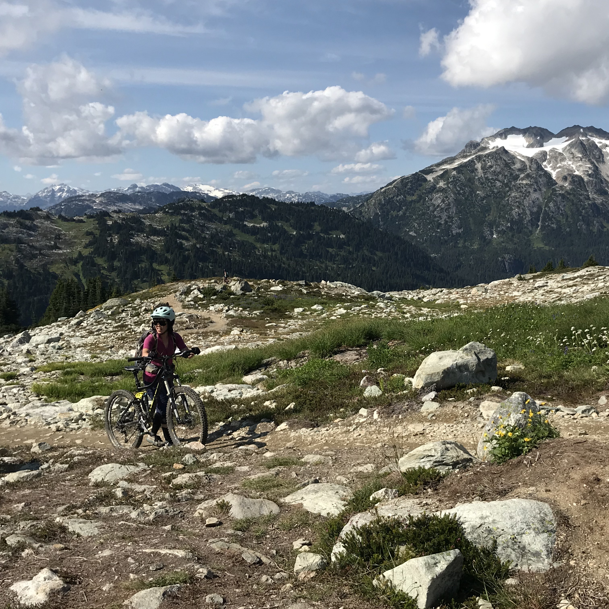

Ski touring When you ski up the mountain, as well as down it! My ski touring adventures Mt Chief Pascall Round Mountain Hanging Lake Musical Bumps My ski touring setup Skis Bindings Boots Skins Transceiver, shovel and probe
Mountain biking When you ride your bike down the mountain (sometimes, you also ride up it). My mountain biking adventures Elfin Lakes, Garibaldi Provincial Park Leave of Absence, Alice Lake  Lord of the Squirrels, Whislter Westside Trails Whistler Bike Park My mountain bike setups "Jaws", my downhill bike "Greta", my enduro bike "Black Lightning", my starter bike